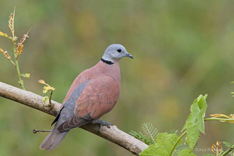
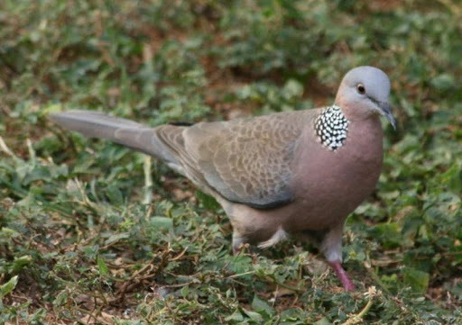

- 1 -
Trong DVD ca nhạc Paris by Night 76, ông MC Nguyễn Ngọc Ngạn có giải thích sơ lược về hai cái ngu "gác cu, cầm chầu"... "Cầm chầu" thì tôi không biết, nhưng có nghe ông cụ của mình nói, đâu phải ai cũng cầm được đâu, mà phải là những người có chức sắc trong làng, thường là Hương Cả (tức trưởng làng) và chỉ cầm trong những xuất hát cúng Đình vào dịp lễ Kỳ Yên để tạ ơn vị Thành Hoàng đã phù hộ cho năm qua được mưa thuận gió hoà... và tai tiếng phía sau những xuất hát thì như ông NNN nói...
Nhưng "gác cu" thì tôi nghĩ không "ngu" chút nào... vì như ở Mỹ Tho quê của tôi, "gác cu" là một môn chơi đầy kiên nhẫn và hứng thú... Còn như lời giải thích của ông NNN chỉ là "bẩy cu" chứ không phải "gác cu" hiihihiiii
Hôm nào rảnh chút sẽ dẫn các bạn đi "gác cu" nha hiihiiiiii
Chim cu có hình dáng giống như chim bồ câu, và nếu dùng chim bồ câu để so sánh, thì quê tôi có ba loài tên gọi như sau:
- Cu Xanh: không biết gáy, lớn bằng khoảng 7/10 chim bồ câu, sắc lông màu xanh đọt chuối, sống thành đàn, rất mạnh đạn (tiếng địa phương của quê tôi, ý nói đạn đất sét bắn bằng giàn thun của đám nhóc có trúng mình hắn cũng chẳng ăn thua), nhưng cũng có lẽ do loài nầy nhát thường đậu rất cao trên cây nên sức đạn giàn thun không đủ mạnh hihiiii
 .
.
Cu Xanh
- Cu Ngói: không biết gáy, nhỏ hơn cu xanh 1 chút, lông màu nâu đỏ lợt, trên ót có một vệt đen nằm vắt ngang, không sống hợp đàn mà sống từng cặp quanh quẩn trong ruộng vườn với con người, nên rất dễ bị săn bởi đạn đất sét hihiihiiiii

Cu Ngói
- Cu Đất hay còn gọi là Cu Cườm: biết gáy, lông màu nâu đỏ hơi sậm, cánh điểm những nốt đen, trên ót có những đốm lông trắng đen xen kẻ nhau như những hạt cườm. Chim trống có con lớn bằng chim bồ câu nhưng thường là một chín một mười và đốm lông cườm trên ót nhiều hơn chim mái. Loài nầy cũng sống hợp đàn nhưng đàn thưa dân hơn loài Cu Xanh, được chỉ huy bởi một con trống đầu đàn. Con đầu đàn to, khoẻ và thường gáy rất sung, và nó chính là đối tượng của trò chơi "gác cu" đầy hứng thú.
Tiếng gáy của Cu Đất là.... cù cú cu u u u u u u....... cu... và tùy theo tiếng dứt là 1 chữ "cu" thì người ta gọi nó là "cu một", có con gáy dứt bằng 2 chữ "cu" thì người ta gọi nó là "cu đôi" và cũng có con gáy dứt bằng 3 chữ "cu"... nhưng rất hiếm...
Thông thường thì trong đàn chỉ có con đầu đàn gáy thôi, vì nếu có anh nào ngứa mỏ gáy sẽ bị anh đầu đàn bay đến đá ngay... và lợi dụng yếu tố độc quyền nầy mà người ta đánh bẩy nó. Gặp địch thủ, sau khi thi nhau tiếng gáy chán chê, Cu Đất thường phùng cổ, gục đầu gầm "cu cu cu..." mà người ta gọi là "thúc" và khi đến cao trào ăn thua nó sẽ vươn thẳng thân lên phùng cổ rồi nhóng lên nhóng xuống chỉ có hai tiếng "cu cu..." liên tục trước khi bay vào đá nhau mà người ta gọi là "bo"...
Thực phẫm của họ nhà cu là lúa, mà khoái khẩu nhứt là những hạt lúa vừa chín tới ngoài đồng...
Cu Đất hay Cườm
Và bây giờ mời các bạn theo chú Tư Thiệt đi gác cu nè hiihihihiii

.Vừa bước chân vô tới nhà Ngoại, thằng Bình quăng túi quần áo lên chiếc giường tre bên hông nhà, miệng vừa thưa Ngoại, thưa Dì... chân nó đã chạy ra cây mận xanh sau nhà, mà nó thoáng thấy đang oằn trái để tạm giải cái khát khô cổ của buổi trưa hè gay gắt nắng... Đây là lần thứ hai nó về Ngoại để nghỉ hè. Từ nhà nó ở Saigon về nhà Ngoại nó ở Mỹ Tho, nó và má nó phải ngồi gần 2 tiếng đồng hồ trên chiếc xe đò cà tàng chật ních người, xuống xe muốn ngất ngư, vậy mà phải cuốc bộ tiếp gần 2 cây số đường ruộng từ lộ cái tới nhà Ngoại tháo mồ hôi hột thì làm sao nó tha mấy chùm mận xanh kia chứ... Nó thót lên cây mận, mà bên tai còn nghe tiếng Má nó hỏi Dì Út nó " Thằng Bình đâu rồi Út "... " Nó trên cây mận kìa..." tiếng Dì Út nó trả lời... "Cái thằng hết biết mà, sắp tới nhà là nó co cẳng chạy, tao chỉ sợ nó té..." rồi có tiếng bà Ngoại nó "Nó lớn xộn rồi, hơi đâu bây lo... ra rữa mặt cho tỉnh mỉnh đi, rồi cơm nước luôn, ba bây đi đồng cũng sắp về rồi đó..."
Sau khi thông cổ với hơn chục trái mận xanh, thằng Bình đưa mắt lơ đãng nhìn khu vườn cây ăn trái bao quanh nhà Ngoại nó. Những cây nầy có vẽ xum xê hơn, lao xao trong cơn gió nhẹ nồng mùi hương lúa mới, và nơi cuối vườn ẩn hiện một mái lá mà hình như năm rồi không có. Vừa lúc đó thì có tiếng Út nó gọi:
- Bình ơi, xuống vô ăn cơm nè...
Nó "dạ" lớn và tuột nhanh xuống, sau khi đã cẩn thận cột đôi vạt áo lại để bọc chùm mận xanh chín mọng để dành cho má nó...
Chưa vào đến cửa, thằng Bình đã nghe tiếng ông Ngoại nó cười lớn:
- Cha, thằng nhóc mau lớn dử bây, kỳ hè nầy về đây đi đập lúa với ông được rồi hà hà... và ông Ngoại nó bước ra vò đầu nó:
- Vào ăn cơm đi con, trèo cây cẩn thận nha, coi chừng té đó...
Buổi cơm đạm bạc nhà Ngoại, không biết có phải vì đói hay vì ấm cúng tình thâm mà nó ăn rất ngon miệng... và nó ngước nhìn ông Ngoại nó, khi nghe má nó hỏi ông:
- Ba à, sau vườn mình có nhà của ai vậy Ba?
- A, bây muốn nói nhà thằng Tư Thiệt đó hả?
- Anh Tư Thiệt? má nó ngạc nhiên... anh hàng xóm của Ba ở chợ Giòng Nhỏ đó hả? Sao nói ảnh hồi hương về bên Gò Cát rồi mà.
Bà Ngoại nó xen vào:
- Nó chớ ai, ừ, vợ chồng nó có hồi hương về bên đó thiệt, nhưng nó không muốn dính vào tranh chấp đất đai với anh em mới qua đây xin Ba mầy cho ở tạm... Tao với ba mầy thấy vợ chồng nó hiền lành, chất phát, không có con cái nên đồng ý.
- Vợ chồng anh Tư rất tốt bụng, gia đình mình đã biết khi sống gần nhau ở chợ Giòng Nhỏ... Dì Út nó tiếp lời... có vợ chồng ảnh ở gần, sớm hôm tối lửa tắt đèn, giúp đở nhau cũng tiện nên ba má mới đồng ý và em thấy cũng tốt phải không Năm...?
Má nó cười:
- Nếu là vợ chồng anh Tư thì còn gì nữa, vợ chồng ảnh ở đây bao lâu rồi Ba?
- Ừ, cũng đâu được hơn 8 tháng rồi, mà cái thằng giỏi thiệt, cái gì cũng biết làm, ai cần gì cũng giúp... nên bà con lối xóm ở đây cũng thương... nhờ có nó mà lũ chim rừng cũng bớt phá mùa màng lúa thóc đó chứ...
Thấy má nó nhìn ông Ngoại nó như muốn hỏi thêm, thì Dì Út nó cười:
- Anh Tư bẩy chim hay lắm... Năm ở lại vài ngày đi, chờ đập lúa xong sẽ có món chim rô ti cho Năm thưởng thức...
- Tao cũng muốn lắm, nhưng rồi công việc trên đó ai làm cho tao đây...
Dì Út nó còn nói ráng:
- Để chút nữa em chạy sang nhà ảnh, coi còn không... thường thường ảnh phải chừa lại một số để làm mồi...
Mắt thằng Bình sáng lên từ nảy giờ khi nghe những lời đối thoại của người lớn, về cái chú Tư gì đó biết bẩy chim... và nó hình dung nếu được đi theo chú ấy bẩy chim thì phải biết... nên khi Út nó định sang nhà chú, nó nói ngay:
- Cho con đi với Út nha...
Út nó cười:
- Được thôi...
Nhưng sau khi cơm nước xong xuôi, thằng Bình thấy hình như Dì Út nó quên mất chuyện qua nhà chú Tư gì đó mà cùng Bà Ngoại và Má nó ở miết trong buồng gói chuyện trò, trong lúc ông Ngoại nó đã ngáy vang trên bộ ván kê ở nhà trên. Nó bước ra cửa nhìn về ngôi nhà nhỏ khuất dưới những tàn cây xoài rậm lá như che bớt dùm cái nắng oi bức của buổi trưa hè, và tự nhiên nó đi về hướng đó. Ngôi nhà đang đóng cửa được cất trên mặt sân mà năm trước nó nhớ là ông bà ngoại nó dùng để ủ nấm rơm, nên xung quanh được bao bọc bởi những con mương, được đào thông thẳng ra kinh Lớn. Những con mương nầy nó đã từng cùng với tụi thằng Út Phệ, Hưng Rèo, Đức Cống... tắm giởn, vó tép *, móc đất dẽo hai bên bờ nắn tu na tu hú *, và khi đứng trước chiếc cầu bắt bằng hai cây cau qua con mương để đi vào ngôi nhà, thằng Bình chợt mĩm cười khi nhớ đến con Thảo Quăn, và cái tên "Bình Trụi" mà con nhỏ đã đặt cho nó để trả thù chữ "quăn" của nó, dù nó cố nói mà tay thì vò vò trên đầu " con Thảo tóc nó quăn, thì tao đặt nó là Thảo Quăn, còn tao, trụi chổ nào đâu mà tụi mầy kêu tao Bình Trụi, còn 2 phân đàng hoàng mà..." nhưng tụi thằng Út Phệ, Hưng Rèo... cứ rộng họng là Bình Trụi, nên cuối cùng nó đành chịu..." trụi thì trụi... chết ai đâu "...
- Ê nhỏ, ở Saigon mới vìa hả, con Năm Quyên phải hông...?
Nó giật mình, dứt ngang dòng cảm nghĩ, nhìn về phía có tiếng nói... Một người đàn ông, trạc chừng anh Hai của nó, tay chân dính đầy bùn đất, vừa gát chiếc gáo lại trên nắp lu nước bên hông nhà, vừa nhìn nó cười... Nó ấp úng:
- Dạ, dạ...
- Vô nhà chơi nhỏ... người đàn ông vừa nói vừa bước tới xô cánh cửa mở ra...
- Dạ... Nó lại dạ nhưng không hiểu sao nó lại không bước qua cầu, dù khuôn mặt của người đàn ông tuy lam lủ nhưng thật hiền từ dễ mến với nụ cười luôn luôn có trên môi... Vừa lúc đó...
- Á, Bình Trụi... mầy mới vìa hả mậy... Thằng Út Phệ không biết từ đâu chạy bổ ra, nhảy ba bước qua cây cầu cau, nắm lấy tay nó:
- Hà hà, năm nay tao thấy mầy hình như trụi hơn đó nha Bình...
- Trụi con khỉ mốc á, mầy phệ hơn thì có... ừ, tao mới vìa nè, mấy thằng kia đâu rồi mậy...?
- Ở nhà tụi nó chứ đâu, cả em Thảo Quăn của mầy nữa, về đây trước mầy mấy ngày hì hì...
- Mầy cười gì chứ, thằng phệ...?
Út Phệ không trả lời nó, mà hỏi lại:
- Mầy muốn qua nhà chú Tư chơi hả?
Nó chưa biết trả lời sao, thì Út Phệ nắm tay nó:
- Đi với tao, chú hiền khô...
Nó theo chân thằng Út Phệ bước vô nhà chú Tư, ngôi nhà với những vật dụng đơn sơ bình dị, và trong lúc thằng Út Phệ ong óng "chú Tư ơi, chú Tư hởi..." thì mắt nó dán vào những chiếc lồng hình cầu treo bên hông nhà, không biết nuôi con gì bên trong vì tất cả đều được che kín bằng vãi.
- Kêu réo gì dử vậy mậy? chú Tư từ phía sau đi lên...
- Chú Tư, thằng nầy là Bình Trụi, bạn của tụi con... Út Phệ mau mắn.
- Tao biết... và chú quay sang nó:
- Về chơi lâu mau mậy nhỏ...?
- Dạ, hết hè con mới về... Nó trả lời chú mà mắt vẫn nhìn vào mấy chiếc lồng.
Nhìn theo ánh mắt nó, Út Phệ nói:
- Chú Tư, lần tới cho thằng Bình đi gác cu với mình được không chú...?
- Ăn thua nó thôi, có lội nỗi không... chú Tư cười... ấy chết, tao mới bắt nồi cơm đang giao cho ông Táo, không khéo chút thím bây vìa bả càm ràm nhức xương... xuống đây chơi...
Nó và Út Phệ theo chú Tư đi ra sau nhà bếp... Nhà bếp chú Tư ngoài hai ông cà ràng bằng đất nung đặt trên bộ khung bằng thân dừa đang bắt lửa, sát bên ngoài là một chiếc lồng thật lớn đặt song song bên hông nhà làm bằng tre và lưới mắt cáo mà bên trong còn nhốt khoảng 7,8 chú cu ngói... mà vừa thấy người vào chúng đã bay lung tung.
Vừa lúc đó...
- Anh Tư ơi, anh có nhà không vậy...?
Nó biết ngay là tiếng Dì Út nó, cùng lúc Út Phệ lên tiếng:
- Dì Út mầy kìa Bình... Chú Tư, bả kêu chú kìa...
Chú Tư Thiệt, chắc nước nồi cơm xong, dậy nắp cẩn thận, gắp một mớ than bỏ lên nắp, khoả lớp than dưới cà ràng ra, lấy những thanh củi đang cháy bỏ sang cà ràng kế bên, xong mới nói:
- Ừ, ra coi nó có chuyện gì không?
* vó tép: chiếc vó là một mảnh vãi mùng hình vuông cạnh chừng 5 tấc, mỗi góc được cột vào đầu thanh nẹp tre được chuốt thật dịu, chổ giao nhau của 2 thanh nẹp tre được buộc bằng dây dừa, và sợi dây dừa nầy dài ngắn là tuỳ theo độ sâu của con mương, trên đầu sợi dây được xỏ xuyên qua 1 miếng sơ dừa để nổi trên mặt nước... dùng một cây tre khô nhỏ, một đầu gắn cái móc như dấu hỏi nhận vó chìm xuống đáy mương, trong vó vò 1 viên đất sét lăn cám rang để làm mồi nhử tép vào ăn... tép tham ăn bám vào viên đất sét... kéo vó lên để bắt...
* tu na tu hú: dùng đất nắn có hình như cái chén xong đập xuống mặt đất bằng... cái tu na nào có tiếng kêu lớn nhứt thì người nắn nó được người nắn cái kêu nhỏ nhứt hoặc không kêu cỏng chạy 1 vòng sân... hihi